Self-supervised real-noise fusion infrared small target detection network
Applied Optics, 65(6), 1736–1744 (2026).
I received the B.S. degree in Optoelectronic Information Science and Engineering from Northwest A&F University in 2025. During my undergraduate studies, I was advised by Prof. Erliang Cui.
I am currently pursuing the M.S. degree in Electronic Information at the College of Optical Science and Engineering, Zhejiang University, under the supervision of Prof. Dong Liu.
My research interests include trajectory prediction, deep learning, and computer vision.
M.S. @ Zhejiang University, 2025–2028 (expected)
Electronic Information, College of Optical Science and Engineering
Advisor: Prof. Dong Liu
B.S. @ Northwest A&F University, 2021–2025
Optoelectronic Information Science and Engineering, College of Science
Advisor: Prof. Erliang Cui
Applied Optics, 65(6), 1736–1744 (2026).
Under review, IEEE Transactions on Intelligent Transportation Systems.
Tingpang, Sanmen
I served as secretary of the practice team and coordinated the Tingpang group’s fieldwork, schedules, and team activities.
Our group investigated Tingpang’s specialty agriculture and the local history of the “First Red Flag in Zhejiang.” We also took part in a team debate and won first place. The experience moved learning and public service beyond the campus: working at the grassroots level required us to listen carefully, coordinate different needs, and turn plans into concrete action.
As team secretary, I worked across schedules, task assignments, communications, and on-site coordination to keep different activities moving together. The debate result was encouraging, but the more lasting value came from seeing how local history, agricultural development, and community life intersect in everyday governance. The experience strengthened my ability to organize a team, respond to practical challenges, and collaborate with people from different backgrounds.
More importantly, it reminded me that meaningful learning is grounded in real communities. By engaging directly with local development and revolutionary history, I gained a clearer understanding of social responsibility and grew through service, cooperation, and reflection.
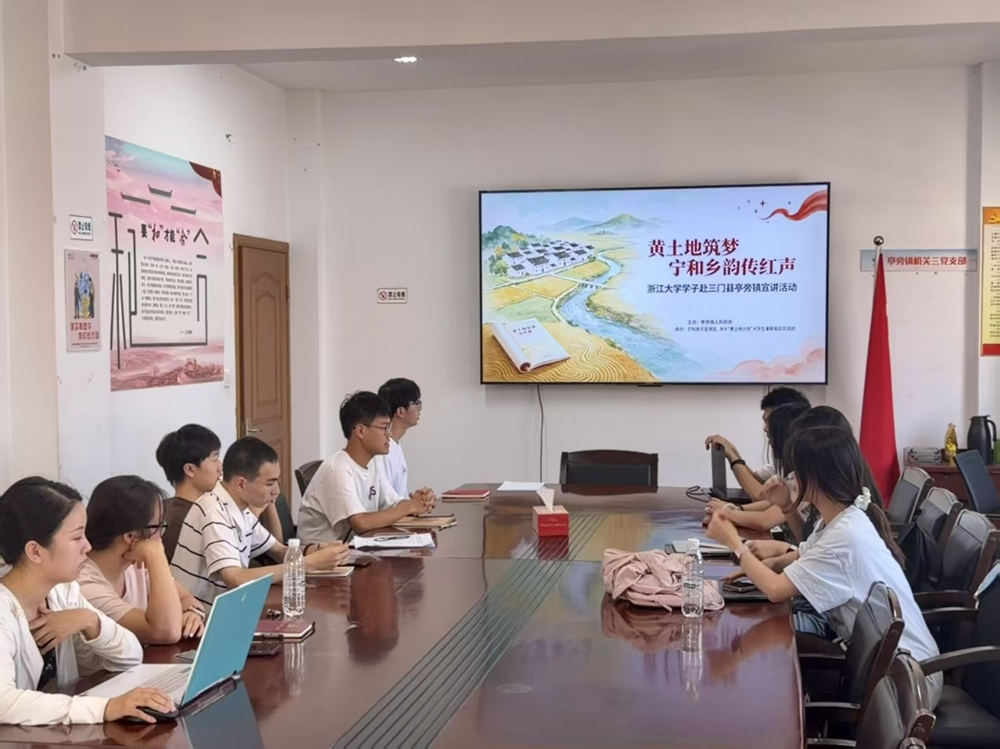
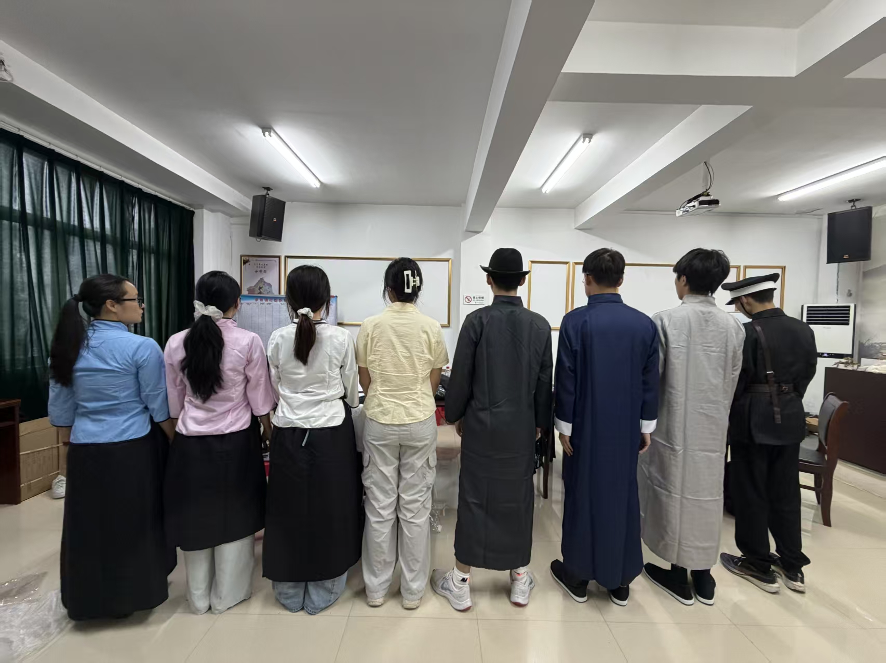
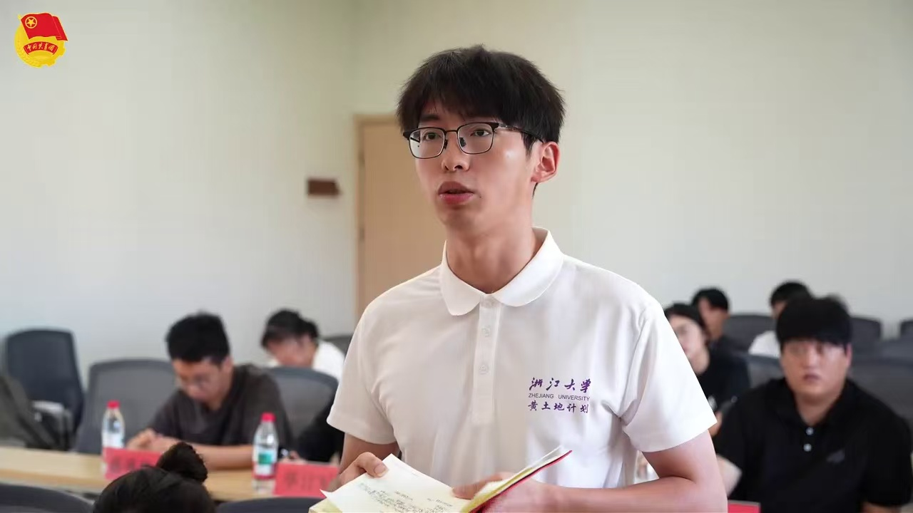
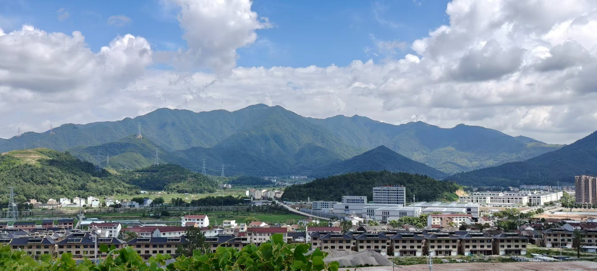
Hangzhou
I visited the 2026 China Academy of Art Graduation Exhibition, where an early-summer day in Hangzhou became a vivid encounter with imagination and beauty.
Moving through paintings, illustrations, installations, and sculptures, I encountered not one fixed definition of beauty, but many intensely personal visual worlds. Familiar materials became strange and dreamlike; private memories, emotions, and imagined spaces were translated into forms that invited me to pause and look again.
The exhibition felt like an aesthetic carnival for the soul. Some works delighted at first sight, while others were unsettling or deliberately ambiguous. Together, they showed me that beauty is not limited to polish or symmetry. It can also lie in a new perspective, an honest emotion, or the courage to make an inner world visible.
As someone trained in engineering, I left with a renewed sense that precision and imagination are not opposites. Attentiveness to form, openness to uncertainty, and the ability to see beyond familiar patterns matter in both artistic creation and scientific research.
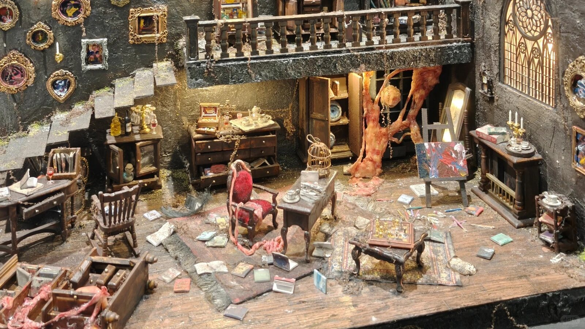
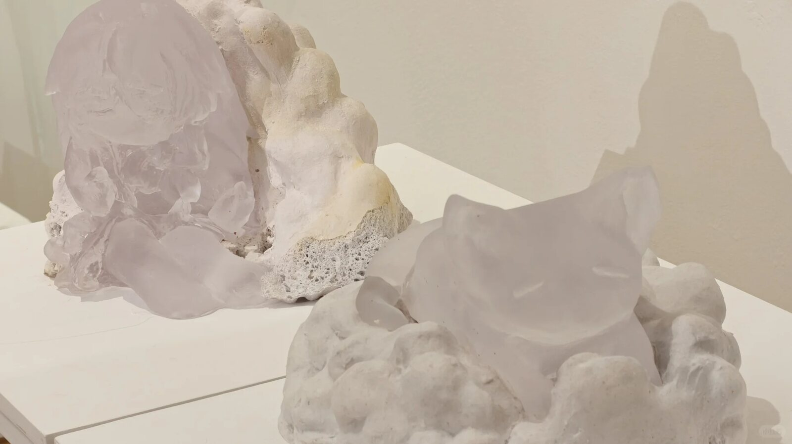
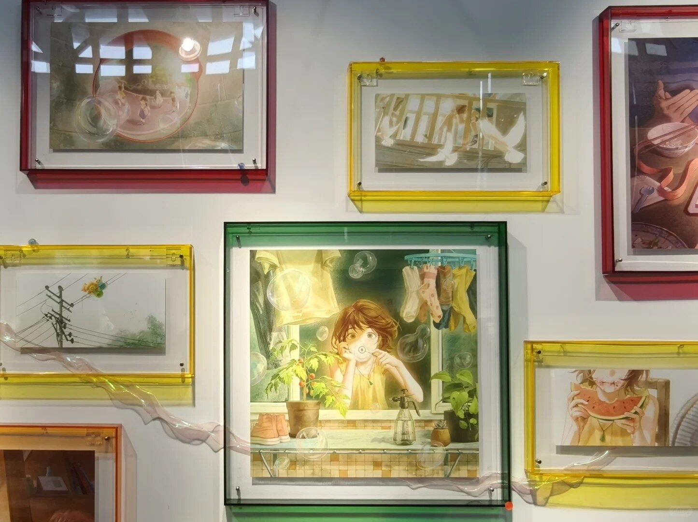
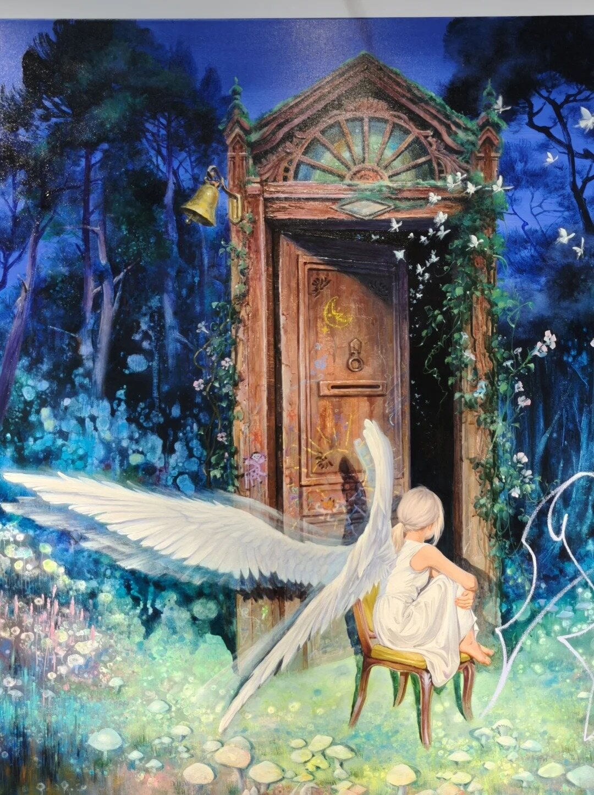
Hangzhou
I completed a 22.9-kilometer spring hike across Hangzhou, trading the usual campus routine for nearly eight hours of mountain paths and city views.
The route connected campus, wooded hills, distant skylines, and views across West Lake. Places that usually appeared as names on a map gradually became slopes, turns, stretches of shade, and changing horizons. Walking made the city feel both larger and more intimate.
Over 22.9 kilometers, 38,617 steps, and nearly eight hours, there were steep climbs and long stretches when the finish still felt far away. The day became an exercise in pacing: moving steadily, adjusting when tired, and allowing small milestones to carry me toward the next one.
Reaching the end brought more than the satisfaction of a new personal best. The hike offered a slower way to experience Hangzhou and a reminder that endurance is rarely dramatic. It is built through ordinary steps, repeated patiently until they become a journey.
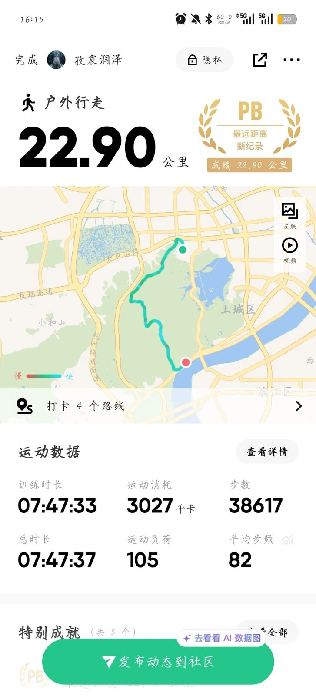
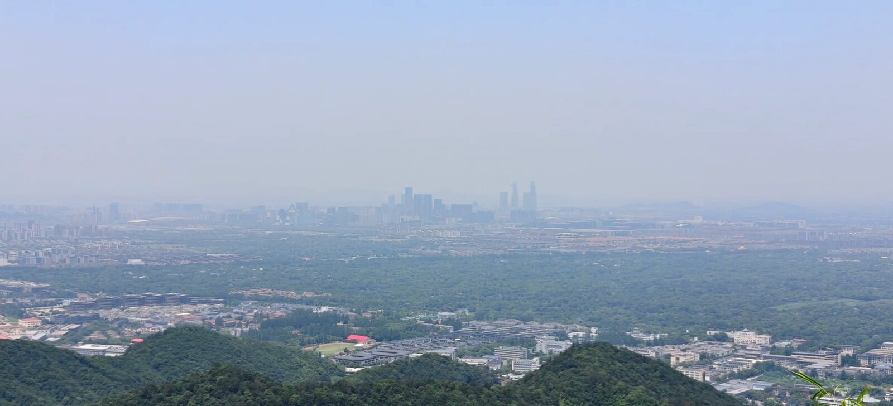
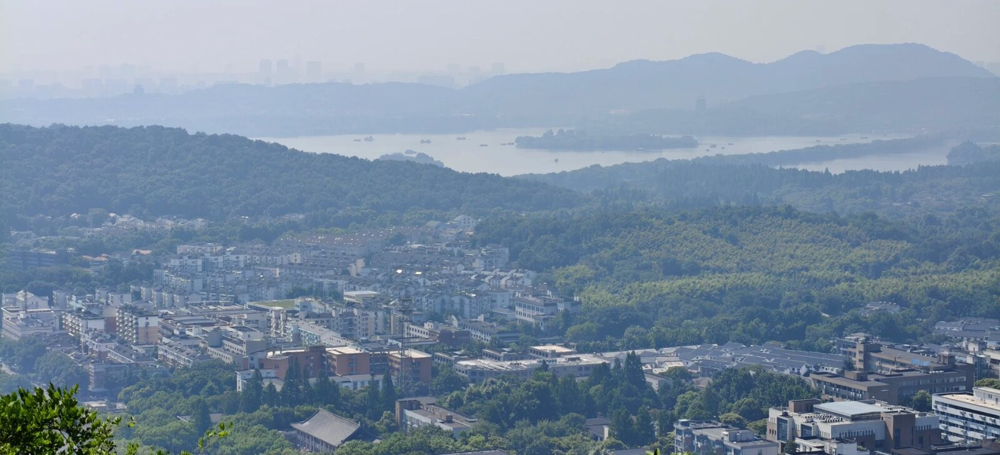
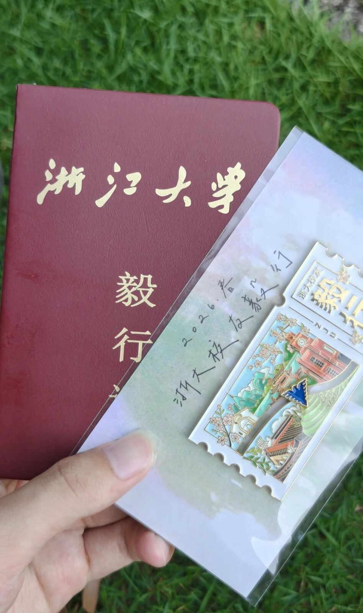
{kind=link}
{kind=link}
{kind=link}
{kind=link}
{kind=link}
{kind=link}
{kind=link}
{kind=link}
{kind=link}
{kind=link}
{kind=link}
{kind=link}